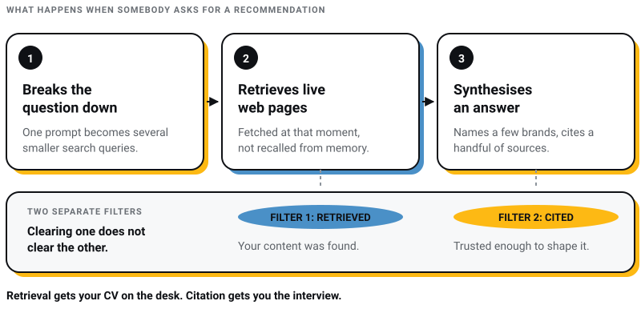

Digital Marketing
Digital Marketing
Why ChatGPT Recommends Your Competitor and Not You (The 5-Gap Diagnostic)
Discover the 5 reasons ChatGPT recommends your competitors instead of your business—and how to improve AI visibility, SEO, GEO, and AEO.

Try this experiment. It ruins most marketing meetings.
Open ChatGPT. Ask it for the best brands in your category, in your city. Read the answer out loud.
If your brand shows up, you just found your most underpriced sales channel.
If it does not, you are in the majority. NeuGenM tested India’s top 100 brands across ChatGPT, Gemini and Claude: 99.2% of them showed up when asked for by name, and only 12.4% got recommended when the question was about the category instead (Afaqs, July 2026).
That gap is the whole problem. The machine knows you exist. It just will not put your name forward.
Here’s the thing, though. Getting mentioned is not luck. It is a system.
In this post, I will show you how ChatGPT actually picks which brands to name, where its citations come from, and the 6-step plan we run at Pixel Street.
You get mentioned by ChatGPT by becoming the most consistent, most cited, most specific brand in your category across the sources AI engines read. That means answer-first pages on your own site, matching business details everywhere, presence on review platforms and directories, activity on LinkedIn and YouTube, and third-party mentions.
You cannot pay for placement. You earn it, and it compounds.
That is the summary.
Now the mechanics, because this is where most brands get it wrong.
First, kill the biggest myth.
There is no directory. No submission form. No ad slot. Nobody at OpenAI maintains a list of approved brands in Kolkata.
Here is what happens when someone asks ChatGPT for a recommendation:
The process is called retrieval-augmented generation. RAG, if you want the short form.
And it contains the single most important insight in this post:
Retrieval and citation are separate steps.
Getting retrieved means your content was found. Getting cited means it was trusted enough to shape the answer. Plenty of brands clear the first bar and fail the second.
Think of it like hiring. Retrieval gets your CV on the desk. Citation gets you the interview. Different filters, different requirements.

What clears the second filter? Specificity, consistency, and other people vouching for you. The model does not want to embarrass itself. It names brands it can verify from multiple angles.
Which raises the real question. Which angles?
Years ago, when I used to explain SEO to clients, I explained backlinks with one word: vouching. A backlink is another website vouching for you. Google trusts you because others do.
AI search runs on the same principle. It just checks more references.
Several independent studies tracked large samples of AI citations through early 2026. For ChatGPT specifically:

Read that last number again.
Your website is necessary. It is nowhere near sufficient.
Your site is where AI verifies you. The recommendation itself is assembled from what others say about you. Directories, reviews, comparison articles, forum threads, press mentions.
ChatGPT behaves like a careful buyer. It checks your claims against the room. Vouching, at machine scale.
One more finding, and a correction attached to it. Evertune found that on ChatGPT, even Wikipedia, its most-cited domain, tops out around 5% of citations. I previously credited that study with 200 million prompts. It is about 220,000. I took the bigger number from a write-up instead of reading the source, which is precisely the failure this post asks you not to reward in anyone else.
The pattern is not universal, mind you. Reddit takes roughly one in five Perplexity citations in the same data.
So on ChatGPT there is no gatekeeper domain, and that is good news for you. This is not winner-takes-all like Google’s page one. It is a long tail with room in it.
If you read the first post in this series, you have met the Citation Audit. Here is the 45-minute version, tuned for this job.
Step 1: Write down 20 prompts your real buyers would ask. Split them:
Step 2: Ask each prompt on ChatGPT, Perplexity, and Google’s AI Mode. Fresh chat every time.
Step 3: Record three things per prompt. Did you appear? Who did? Which sources got cited?
Step 4: Repeat monthly. Same prompts, same sheet.
That third column is the treasure map. The cited sources are the exact publications, directories, and threads you need to show up in.
One tip from doing this ourselves: when a competitor appears and you do not, ask ChatGPT for a follow-up. “Why did you recommend them?” The model will often narrate its own evidence. Free competitive intelligence.
And one warning from the data. This field moves fast. Semrush tracked 230,000 prompts over thirteen weeks and watched Reddit’s share of ChatGPT responses fall from close to 60% in early August 2025 to around 10% by mid-September (Semrush, November 2025). Semrush’s own reading is that OpenAI deliberately reduced its lean on one source, not that anything changed on Reddit’s side. Six weeks, and a fifth of the citation landscape moved. An annual audit is worthless. Monthly is the minimum.
Now the repair plan.
This is the system we run at Pixel Street. I call it the Mention Machine because that is what it builds: a set of assets that keep generating AI mentions while you sleep.
Work the steps in order. Each one feeds the next.
AI engines cross-check before they trust. If your business name, description, services, and location do not match across your website, Google Business Profile, LinkedIn, and directories, you read as noise.
Here is how:
Boring work. Also the highest-return hour you will spend this month.
ChatGPT favors long-form content it can lift clean answers from. So build pages that are the answer:
A pricing page with real numbers. We publish ours. Websites from Rs. 50,000, social retainers from Rs. 35,000 a month. It is a big reason machines can describe us accurately.
Honest comparison content for your category. Useful first, self-promotional second.
Service pages that open with a 40 to 70 word direct answer before anything else.
Every claim needs a number, and the number needs a name and a date attached. Not because formatting earns citations, which the research does not support, but because a sourced figure is a fact a machine can check against another source and find agreement.
Remember the treasure map from your Citation Audit? Those cited directories, listicles, and publications are your outreach targets.
LinkedIn is now the second most cited domain in AI answers, behind Reddit and ahead of Wikipedia and YouTube. For B2B and agency brands, this is the asymmetric bet of 2026.
What works: a complete company page, founders posting substantive analysis instead of motivational fluff, and posts that answer the same questions your buyers ask AI.
I post brand strategy and FMCG breakdowns weekly. Some of those posts now show up as sources when AI answers questions in our space. The loop closes.
YouTube’s 0.737 correlation with AI visibility is too big to ignore, and it beat backlinks by better than three to one in the same study. You do not need a studio. You need 10 videos answering your buyers’ top 10 questions, with clear titles and honest depth. A brand name in a title, a description and a transcript is three mentions a machine can read.
Reddit and Quora are trickier. Heavily cited, but communities smell promotion instantly.
The rule: answer genuinely, disclose who you are, mention your brand only when it is the honest answer to the question. One authentic thread that ranks can feed AI answers for a year.
Here is the positioning test that decides everything.
If your brand description could also describe your top three competitors, AI has no reason to name you specifically.
“Full-service digital agency delivering quality solutions” describes ten thousand companies. It says nothing.
Let me tell you what specificity looks like. Four years ago I made a cold call to ITC with a fancy deck and zero credibility. Today we design for them, and for Coca-Cola and Marico. That sentence describes exactly one agency. That is the kind of fact a machine can attach to a name.
Original data is the strongest version of this. Publish a small survey, a benchmark, a teardown with real numbers. AI engines hunt for citable facts. The brand that owns the fact owns the citation.
The engines do not behave the same, and the difference is not subtle. Across 83,670 citations gathered over 54 days, ChatGPT pulled 12.1% of its citations from Wikipedia. Claude pulled 0.1%. Perplexity pulled none at all, zero out of 44,800 (Analyze AI, January 2026). One vendor’s prompt set, skewed towards B2B software, so read it as a shape rather than a constant.
The cheat sheet:
| Engine | What it favors | Your priority move |
|---|---|---|
| ChatGPT | Long-form authority, Wikipedia, LinkedIn | Depth content plus a strong LinkedIn footprint |
| Perplexity | Fresh, well-cited pages, more sources per answer | Recent publish dates, visible sources, frequent updates |
| Google AI Overviews | Pages that answer one question well, YouTube; ranking helps but no longer decides | Classic SEO plus video, and depth on narrow questions |
A correction to my first version of this post. I said roughly 76% of AI Overview citations also rank in Google’s top 10, and used it to argue that good SEO carries you into AI answers for free. That figure is now 37.9% across 863,000 keyword SERPs, with about a third of cited pages ranking beyond position 100 (Ahrefs, March 2026). Ranking is still the cheapest way in. It is nowhere near sufficient, and I unpack what that costs you in AEO versus GEO versus SEO.
Which makes everything above more important, not less. All of it is about being citable on grounds other than your ranking.
And your Citation Audit has to test all three engines. Winning one and assuming the rest is how brands fool themselves.
Four traps I keep seeing Indian brands fall into:
Buying fake reviews or seeding fake Reddit threads. Platforms purge them, communities flag them, and a purge can erase your visibility overnight. See the Reddit citation collapse above.
Treating llms.txt as a magic switch. Ahrefs checked 137,000 domains in May 2026 and found 97% of those files had received zero AI requests (PPC Land). Google’s own documentation says publishing one will neither harm nor help. Ship it if you like. Expect nothing, and do not pay anyone for it.
Stuffing “best agency in Kolkata” into every paragraph. These systems read meaning, not keyword density. Repetition without substance reads as spam to machines and humans both.
Expecting results in two weeks. Honest timeline from our own work: entity fixes and answer-first pages start showing effects in 6 to 10 weeks. Earned mentions and community presence compound over 3 to 6 months. Anyone promising ChatGPT rankings in 7 days is selling you a dream.
Do not attempt all six steps this week.
Run the 20-prompt Citation Audit today. Then spend one hour on Step 1. Entity consistency is free, fast, and it makes every other step work better.
Then pick one earned channel from Step 3 and go get a single placement.
One consistent identity plus one good mention beats a hundred scattered efforts.
That cold call to ITC taught me something I keep coming back to. Credibility compounds. The first mention is the hardest. Every one after it gets easier, because now the machines have something to check you against.
Go earn the first one.
Next in this series: why ChatGPT recommends your competitor and not you. The full diagnostic, with the five gaps that keep good brands invisible. And if you are being sold an AEO package on top of your SEO retainer, read AEO versus GEO versus SEO before you sign it.
Can you pay ChatGPT to recommend your brand?
No. There is no paid placement in ChatGPT’s organic answers. Mentions are assembled from web content the model retrieves and trusts: your site, directories, reviews, articles, and community discussions. The only way in is earning presence across those sources.
How long does it take to get mentioned by ChatGPT?
Realistically, 6 to 10 weeks for first movement after fixing entity consistency and publishing answer-first pages, and 3 to 6 months for durable visibility built on earned mentions. Claims of guaranteed mentions within days are not credible.
Which sources influence ChatGPT recommendations the most?
Per 2026 citation studies: Wikipedia (13.15% of citations) and Reddit (11.97%) lead, LinkedIn appears in 14.3% of ChatGPT Search responses, YouTube presence is the strongest measured predictor of AI visibility at a 0.737 correlation, and 84% of citations go to earned media rather than brand-owned pages. The widest measured gap is review profiles: 1% citation rate without one, 53.5% with even a thin one.
Does being mentioned by ChatGPT actually drive sales?
Yes, and the visitors are unusually valuable. Adobe’s Q2 2026 AI Traffic Report, drawn from over a trillion visits to US retail sites, found AI-referred visitors converting 42% better than non-AI traffic in March 2026 and generating 37% more revenue per visit, because they arrive after doing their comparison research inside the chat.
Do the same tactics work for Perplexity and Google AI Overviews?
The foundation transfers, but each engine weights sources differently. Perplexity favors fresh, well-cited pages and does not touch Wikipedia. Google AI Overviews still lean on YouTube and on pages that rank, though only 37.9% of their citations now come from the top 10. Audit all three engines separately every month.
10 min read 19 cited sources Digital Marketing
Author
Khurshid Alam is the founder of Pixel Street, an AI-native design & development studio. Design thinking on weekdays and spreadsheets on weekends.
He writes about growth, design, and AI, mostly because someone has to say the quiet parts out loud.
Digital Marketing
Discover the 5 reasons ChatGPT recommends your competitors instead of your business—and how to improve AI visibility, SEO, GEO, and AEO.
 Digital Marketing
Digital Marketing
Learn about AEO vs GEO vs SEO. Discover what changed with AI search, what still matters, and how to optimize for Google AI Overviews, ChatGPT, and…
 WEB DEVELOPMENT
WEB DEVELOPMENT
AI website builders are fast, but are they right for your business? Discover where they excel, where they fail, and when custom development is the…